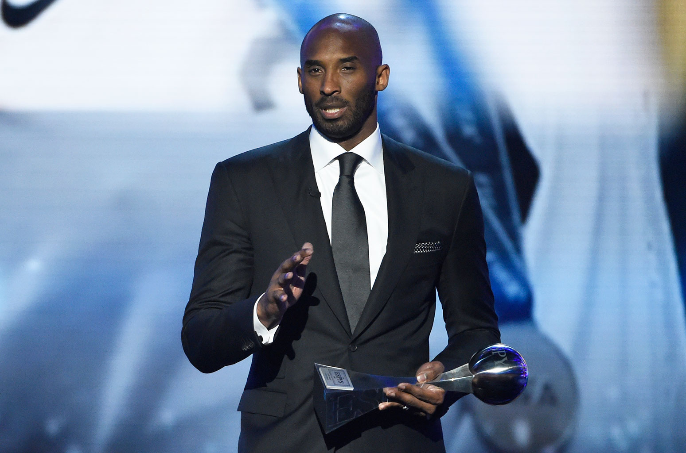

Off Court Success:
The honors and awards Kobe Bryant won outside of basketball were just as amazing. In many ways, they showed how dedicated and skilled he is. He won an Oscar for the short animated movie "Dear Basketball," which was a love letter to basketball. Bryant was also great at running a business. A lot of people really liked his book "The Mamba Mentality: How I Play." He also started Kobe Inc. and Granity Studios. Another great thing he did for charity was start the Kobe and Vanessa Bryant Family Foundation. This group helped kids and families in need. Kobe caused a lot of changes. This shows that his drive and desire to be the best weren't just on the basketball court. They were a big part of who he was and what he left behind.